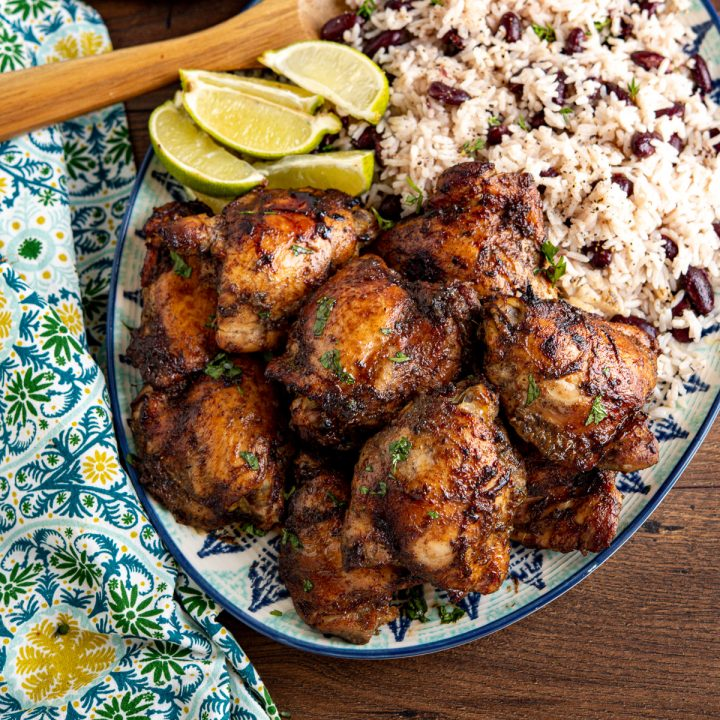

QUISQUEYAYITI

Ingredients
- 8 Whole Wings
- 3 cup White Rice
- 1 can Green Pigeon Peas
Preparation
- Once clean, season the wings with garlic powder, onion powder, parsley & lemon pepper.
- Roast in air fryer at 275° for 50 mins.
- Put the rice in the rice cooker and select white rice.
- Blend half the can of peas with some water.
- Heat med-large pot on med-high heat & add olive oil.
- Add diced onions & peppers and saute.
- Add minced garlic & chicken bouillion cube and then mix.
- Add mashed and regular peas, saute for 2 mins.
- Add water, dominican oregano, tomato paste and auyama and mix.
- Simmer for 20 mins until it thickens and add more water if necessary.
- Turn heat off and let it cool
- Once cool, pour it into blender and blend once more. You may need to do multiple blends to be able to blend it all
- Once all has been blended return to pot and put it on medium-low heat. Taste test.
- Let rest for 10 mins before serving
- Plate your rice first, then the wings on the side and the pigeon peas over the rice.
- Enjoy!